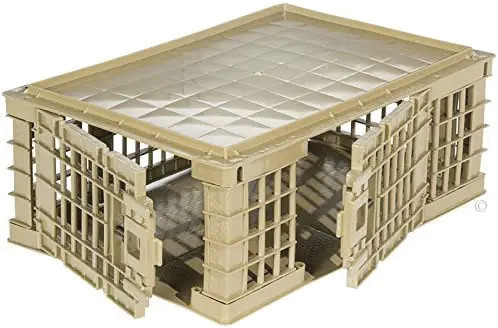
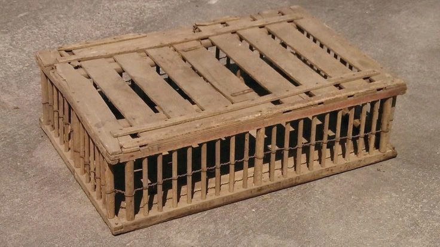

Broody coops:
This is a nest or cage that is commonly used to confine broody birds to stop broodiness.
Broody coops have bottoms made of wire mesh, which discourages chickens from sitting and being inactive.
Carrying devices:
The most carrying device in poultry farming is transport or carrying crates. These crates are designed for holding and carrying chickens and other poultry birds. The catching crates should be designed in such a way that they are durable, simple to put chickens in and take them out, and impossible for the bird to escape. Their size depends on the size of the birds to be held. They can be made of plastic, wood or any other suitable materials. There are ready-made and on-farm-made crates using locally available resources. Figures 10.10 (a) and (b) show examples of carrying crates.


Exercise 10.2
You are planning to expand your poultry farm and you need to build new chicken houses.
What factors would you consider when choosing the location for the new chicken houses to ensure their safety and productivity?
Your chicken houses are experiencing an invasion of vermin and wild birds, causing distress to the chickens and affecting their productivity.
What measures would you take to protect the chicken houses from vermin and wild birds?
Your chicken houses are experiencing high humidity levels, which are causing discomfort to the chickens and affecting their productivity.
How would you correct the situation to maintain optimal humidity levels?